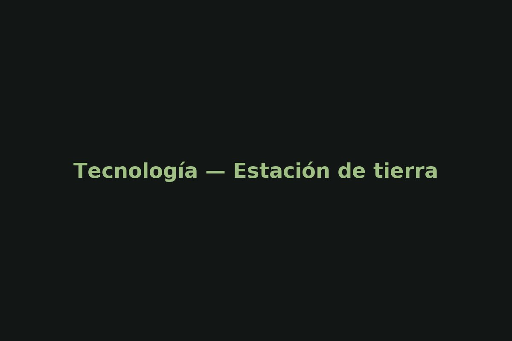
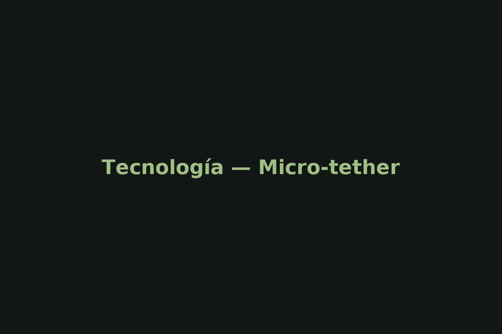
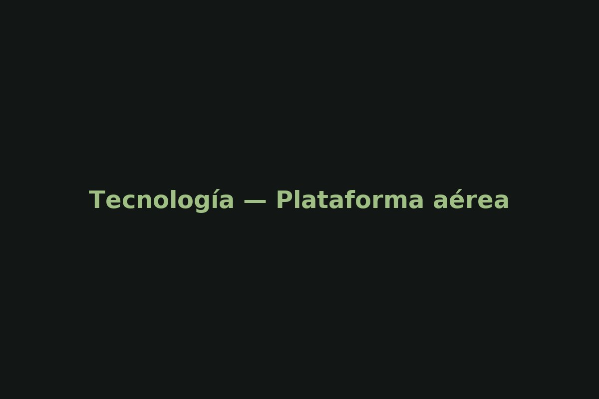

Technology
Arquitectura modular con estación de tierra, micro‑tether híbrido energía/datos y plataforma aérea con cargas útiles intercambiables.

Estación de tierra
- Winch inteligente, control de tensión
- Gestión de potencia hasta 1200 W
- Fibra óptica 1–10 Gbps

Micro‑tether
- Fibra monomodo + conductores DC
- Alta resistencia a tracción
- Revestimiento resistente a intemperie

Plataforma aérea
- EO/IR estabilizado, SDR, 5G repeater
- Telemetría y control seguros
- Hot‑swap de payloads